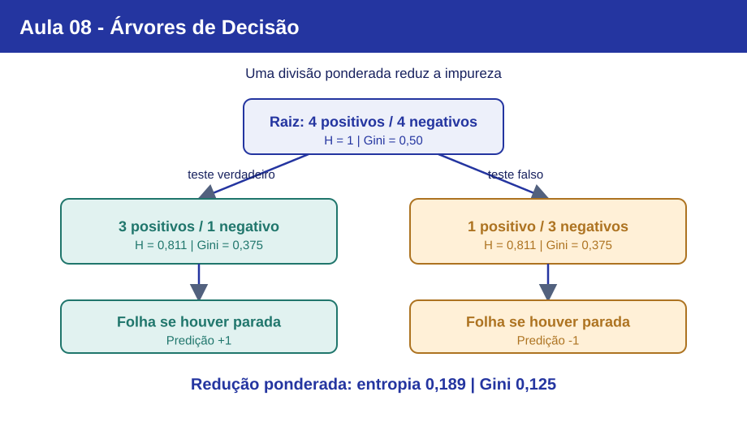

Nota visual 08 - Aprendizagem com Exemplos

Questão central: como transformar exemplos rotulados em uma regra capaz de generalizar?
Mapa conceitual
flowchart TD
A["Exemplos rotulados"] --> B["Separar treino e teste"]
B --> C["Calcular impureza no treino"]
C --> D["Comparar divisões candidatas"]
D --> E["Escolher divisão"]
E --> F{"Parada?"}
F -->|não| C
F -->|sim| G["Folha: classe prevista"]
G --> H["Avaliar generalização no teste"]
classDef base fill:#e9eafb,stroke:#2435a0,color:#17215e;
class A,B,C,D,E,F,G,H base;
Conceitos em sequência
- De regras para exemplos: D={(x_i,y_i)}; hipótese h(x) aproxima relação f(x); desempenho relevante é em exemplos não vistos.
- Classificação e regressão: Classificação prevê classes; regressão prevê valores numéricos contínuos; o alvo define a tarefa.
- Generalização: Underfitting e overfitting; treinamento e teste devem ser separados antes de avaliar.
- Árvores de decisão: Nós são testes, ramos são resultados, folhas são predições; caminho raiz-folha equivale a regra.
- Escolha de divisões: Entropia mede incerteza, Gini mede impureza e ganho de informação compara divisões.
- Implementação: DecisionTreeClassifier, fit, predict, max_depth e representação da árvore.
Classificação, regressão e generalização
| Alvo | Tarefa | Exemplo |
|---|---|---|
| Categoria | Classificação | Aprovado ou reprovado |
| Valor numérico | Regressão | Estimar consumo de energia |
Uma hipótese h aprende a partir dos pares (xᵢ,yᵢ). Um modelo simples demais pode não captar padrões (underfitting); um modelo excessivamente ajustado ao treino pode memorizar ruído (overfitting). Dados de validação orientam a escolha de hiperparâmetros, e o teste estima o desempenho final.
Árvore de decisão: escolher uma divisão
H(S) = -Σ p(c) log₂ p(c)
Gini(S) = 1 - Σ p(c)²
Ganho = I(S) - Σ (|Sⱼ|/|S|) I(Sⱼ)
p(c) é a proporção da classe c; I representa a impureza usada. A soma pondera cada filho pelo número de exemplos. Para p(c)=0, considere o termo da entropia igual a zero.
Exemplo didático: oito exemplos, quatro de cada classe. Uma divisão produz um filho com três positivos e um negativo e outro com um positivo e três negativos.
| Conjunto | Positivos / negativos | Entropia | Gini |
|---|---|---|---|
| Raiz | 4 / 4 | 1 | 0,5 |
| Filho esquerdo | 3 / 1 | 0,811 | 0,375 |
| Filho direito | 1 / 3 | 0,811 | 0,375 |
O ganho de entropia é 1 - 0,811 = 0,189; a redução de Gini é 0,5 - 0,375 = 0,125. Uma divisão perfeitamente pura teria impureza final zero. O processo é guloso: escolhe a melhor divisão local, não garante a melhor árvore global.
Da regra ao código
DecisionTreeClassifier aprende divisões com fit; predict percorre a árvore. max_depth limita a profundidade, min_samples_leaf restringe folhas muito pequenas. Uma árvore profunda pode alcançar ótimo ajuste no treino e desempenho inferior no teste. Em regressão, o critério de divisão e a predição das folhas são numéricos.
Revisão de 30 segundos
Uma árvore transforma exemplos em testes sucessivos. Cada divisão reduz a impureza segundo um critério local; as folhas fazem predições. A generalização depende da complexidade e do protocolo de avaliação.
Erros conceituais frequentes
- Usar o teste para escolher parâmetros ou transformações.
- Tratar acurácia como critério universal de qualidade.
- Confundir ganho de informação com impureza do filho.
- Considerar uma árvore profunda necessariamente melhor.
Revisão de 1 minuto
Calcule a impureza da raiz de duas classes equilibradas, explique o ganho ponderado e descreva como uma nova amostra chega à folha.
Checklist
- [ ] Distingo classificação e regressão.
- [ ] Distingo treinamento, validação e teste.
- [ ] Calculo entropia, Gini e redução ponderada.
- [ ] Interpreto uma regra raiz-folha e efeitos de profundidade.
Próxima conexão: KNN usa a proximidade dos exemplos em vez de aprender uma árvore de testes.